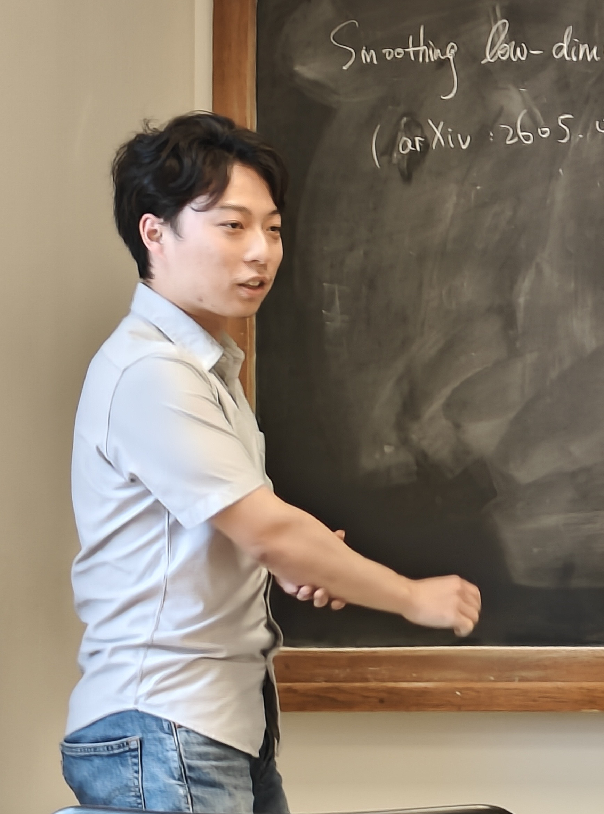

Chuhao HUANG 黄楚昊
DMA -
École Normale Supérieure
45 rue d'Ulm
75230 Paris Cedex 05
France
E-mail: prename.name@ens.fr (replace prename by chuhao, and name by huang)
Bureau: T9, roof of DMA

I am a second-year PhD student in mathematics at École Normale Supérieure (ENS-PSL), working under the supervision of Olivier Benoist. Before, I obtained a master's degree in mathematics from ENS-PSL and Sorbonne Université, and a bachelor's degree in mathematics from Peking University.
Research interests
My research interests lie at the interface between algebraic topology and algebraic geometry, with a particular focus on applying techniques from cobordism theory to the study of algebraic cycles.
"It was my lot to plant the harpoon of algebraic topology into the body of the whale of algebraic geometry."
Solomon Lefschetz
Seminar
I'm co-organizing Séminaire Mathjeunes, a seminar which focuses mainly on geometry (algebraic, complex, motivic, etc.) and number theory. The speakers are typically PhD students and postdocs, and the audience consists mainly of PhD and master's students.
Please feel free to contact me if you would like to be added to the mailing list or if you are interested in giving a talk.
Research
Preprints:
- Smoothing low-dimensional cycles in algebraic cobordism. Preprint 2026, arXiv: 2605.04347.
Thesis and notes:
- M2 thesis at École Normale Supérieure and Sorbonne Université: Quillen's Theorem in Complex Cobordism and its Applications (2023, supervised by Olivier Benoist).
- L3 thesis at École Normale Supérieure: Arbres et amalgames (2022, joint work with Yuxiao Xie, supervised by Gaëtan Chenevier).
- Undergraduate thesis at Peking University: Topics in Model Categories (2022, supervised by Bohan Fang).
- Undergraduate research paper for the REU program of Chicago University: Mirror symmetry of elliptic curves (2020, supervised by Owen Barrett). For a more self-contained version, see this.
Teaching
Séance de TD - Topologie Algébrique (deuxième semestre 2025-2026).
Les séances de TD ont lieu en salle Cartan, de 10h45 à 12h45 le vendredi.
Si vous trouvez une erreur dans les corrigés, n'hésitez pas à m'écrire.